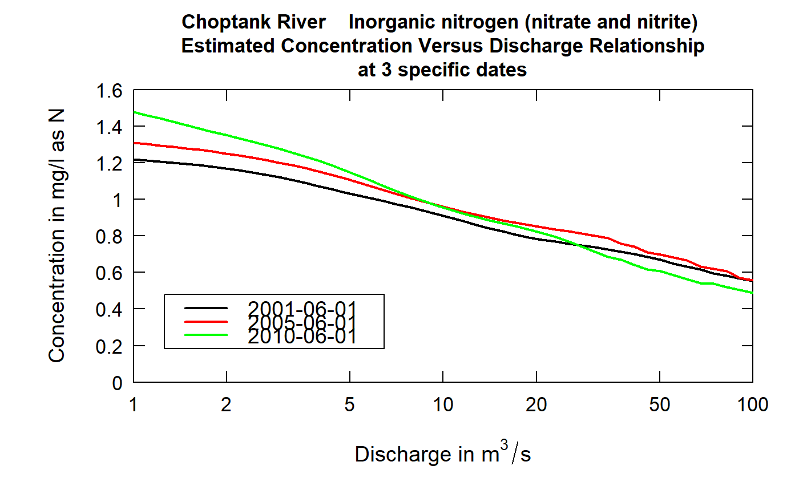
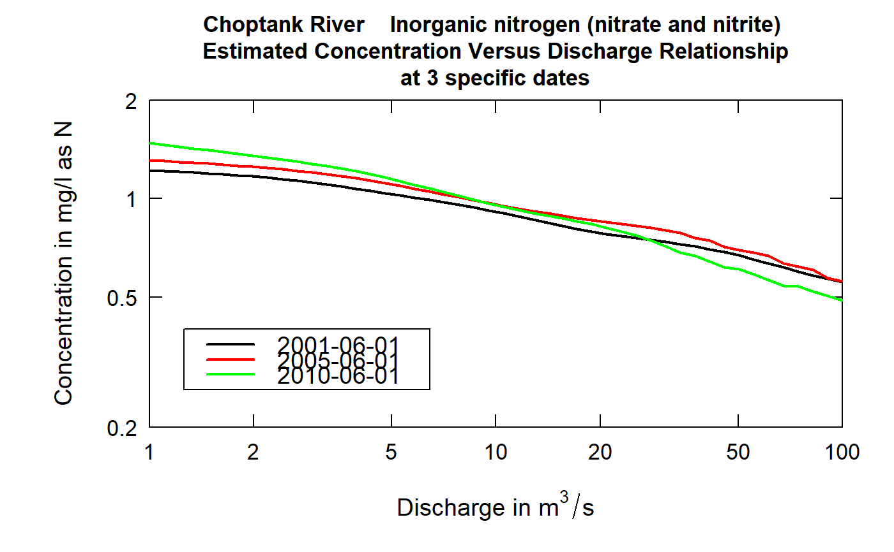

R/plotConcQSmooth.R
plotConcQSmooth.RdThese plots are like a vertical slice of the estimated concentration surface that is seen in the plotContours function. These plots show how the concentration-discharge relationship is changing over time. Typically the time points selected would be in three years at the same time of year spaced out over the period of record. But that is not necessary. Another possibility is to use this to explore seasonal differences. In this case the three dates would be in the same year but different times during the year.
Although there are a lot of optional arguments to this function, most are set to a logical default.
Data come from named list, which contains a Sample dataframe with the sample data, and an INFO dataframe with metadata.
plotConcQSmooth(eList, date1, date2, date3, qLow, qHigh, qUnit = 2, legendLeft = 0, legendTop = 0, concMax = NA, concMin = NA, bw = FALSE, printTitle = TRUE, printValues = FALSE, minNumObs = 100, minNumUncen = 50, colors = c("black", "red", "green"), printLegend = TRUE, windowY = 7, windowQ = 2, windowS = 0.5, tinyPlot = FALSE, customPar = FALSE, lwd = 2, cex = 0.8, cex.axis = 1.1, cex.main = 1.1, cex.legend = 1.2, lineVal = c(1, 1, 1), logScale = FALSE, edgeAdjust = TRUE, usgsStyle = FALSE, ...)
| eList | named list with at least the Sample and INFO dataframes |
|---|---|
| date1 | character specifying the date for the first curve on the graph, it is in the form "yyyy-mm-dd" (must be in quotes) |
| date2 | character specifying the date for the second curve on the graph, it is in the form "yyyy-mm-dd" (must be in quotes). If only one curve is wanted this should be NA |
| date3 | character specifying the date for the third curve on the graph, it is in the form "yyyy-mm-dd" (must be in quotes). If a third curve is not wanted this should be NA |
| qLow | numeric value for the lowest discharge to be considered, expressed in the units of discharge that are being used (as specified in qUnit) |
| qHigh | numeric value for the highest discharge to be considered, expressed in the units of discharge that are being used (as specified in qUnit) |
| qUnit | object of qUnit class. |
| legendLeft | numeric which represents the left edge of the legend in the units of the plot. |
| legendTop | numeric which represents the top edge of the legend in the units of the plot. |
| concMax | numeric value for upper limit on concentration shown on the graph, default = NA (which causes the upper limit to be set automatically, based on the data) |
| concMin | numeric value for lower limit on concentration shown on the vertical log graph, default is NA (which causes the lower limit to be set automatically, based on the data). This value is ignored for linear scales, using 0 as the minimum value for the concentration axis. |
| bw | logical if TRUE graph is produced in black and white, default is FALSE (which means it will use color) |
| printTitle | logical variable if TRUE title is printed, if FALSE not printed |
| printValues | logical variable if TRUE the results shown on the graph are also printed to the console and returned in a dataframe (this can be useful for quantifying the changes seen visually in the graph), default is FALSE (not printed) |
| minNumObs | numeric specifying the miniumum number of observations required to run the weighted regression, default is 100 |
| minNumUncen | numeric specifying the minimum number of uncensored observations to run the weighted regression, default is 50 |
| colors | color vector of lines on plot, see ?par 'Color Specification'. Defaults to c("black","red","green") |
| printLegend | logicalif TRUE, legend is included |
| windowY | numeric specifying the half-window width in the time dimension, in units of years, default is 7 |
| windowQ | numeric specifying the half-window width in the discharge dimension, units are natural log units, default is 2 |
| windowS | numeric specifying the half-window with in the seasonal dimension, in units of years, default is 0.5 |
| tinyPlot | logical variable, if TRUE plot is designed to be plotted small as part of a multipart figure, default is FALSE. |
| customPar | logical defaults to FALSE. If TRUE, par() should be set by user before calling this function (for example, adjusting margins with par(mar=c(5,5,5,5))). If customPar FALSE, EGRET chooses the best margins depending on tinyPlot. |
| lwd | number line width |
| cex | numerical value giving the amount by which plotting symbols should be magnified |
| cex.axis | magnification to be used for axis annotation relative to the current setting of cex |
| cex.main | magnification to be used for main titles relative to the current setting of cex |
| cex.legend | magnification to be used for legend annotation relative to the current setting of cex |
| lineVal | vector of line types. Defaults to c(1,1,1) which is a solid line for each line. Options: 0=blank, 1=solid (default), 2=dashed, 3=dotted, 4=dotdash, 5=longdash, 6=twodash |
| logScale | logical whether or not to use a log scale in the y axis. |
| edgeAdjust | logical specifying whether to use the modified method for calculating the windows at the edge of the record. The modified method tends to reduce curvature near the start and end of record. Default is TRUE. |
| usgsStyle | logical option to use USGS style guidelines. Setting this option to TRUE does NOT guarantee USGS complience. It will only change automatically generated labels |
| … | arbitrary graphical parameters that will be passed to genericEGRETDotPlot function (see ?par for options) |
date1<-"2001-06-01" date2<-"2005-06-01" date3<-"2010-06-01" qLow<-1 qHigh<-100 eList <- Choptank_eList plotConcQSmooth(eList, date1,date2,date3,qLow,qHigh)plotConcQSmooth(eList, date1,date2,date3,qLow,qHigh,logScale=TRUE)